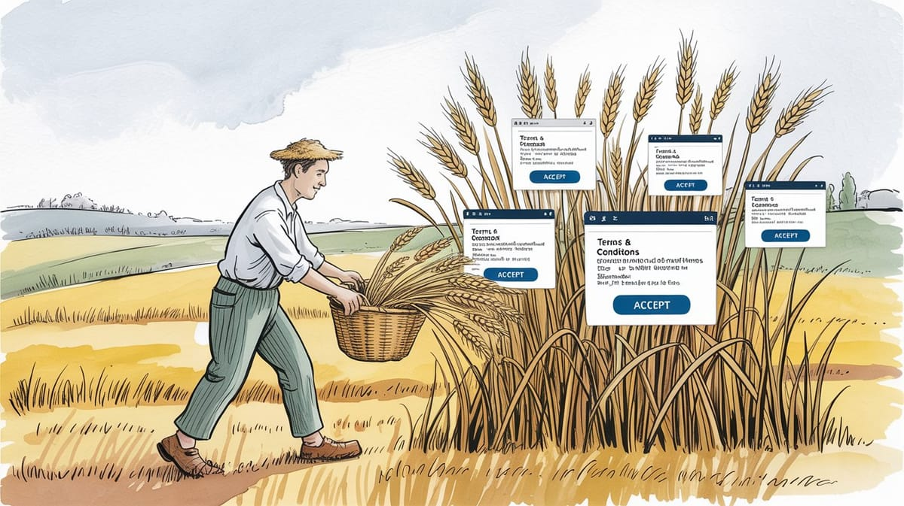

:: Now begins a story...
May I present to you, a finely curated section of a fine collection of the wonderful web we weave with a weekly roundup of bits and pieces from the far corners of the super information highway that I like to call — Token Wisdom ✨


"We're witnessing the collapse of digital privacy as we know it. Quantum computing threatens to shatter our cryptographic foundations while governments systematically dismantle anonymity online. The question isn't whether our current security will survive—it's whether we'll build something better before it's too late."
— At least that's what my encryption algorithms whispered before they started having existential crises. But who am I to argue with paranoid math? My security clearance is still pending quantum approval 😝

Editor's Notes 📆
Week 47 of 52 // November 16th 🧿 November 22nd, 2025
Welcome to the 135th edition! This week we explore the frontiers of consciousness research and human adaptation—from MIT's groundbreaking consciousness studies to evolutionary mismatches in modern environments. We're examining how memory works, why cities challenge our biology, and how artificial intelligence ventures are reshaping our understanding of mind and machine.
The convergence of neuroscience, evolutionary biology, and artificial intelligence reveals a world where human consciousness faces unprecedented questions about its nature and future.

🔮 Pearls of Wisdom, The Latest Edition...
Get smart, fast. If you're pressed for time and want to keep up to date!
Enjoy The Newest Latest, A Closer Look & Time Well Spent!

🎉 Newest / Latest
100% Authentic Humanly Chosen

Consciousness, Cognition, and Human Adaptation
This week's collection examines how consciousness emerges from neural activity, how humans struggle to adapt to modern environments, and how technology reshapes our understanding of mind and memory. From breakthrough neuroscience to corporate AI ventures, we're witnessing the transformation of human consciousness in an increasingly artificial world.
- MIT Explores the Science of Consciousness
MIT's groundbreaking Consciousness Club unites neuroscientists and philosophers to solve how the brain creates subjective experience, marking the first systematic attempt to map the neural basis of consciousness. Read more at MIT - Humans Evolved for Nature, Not Cities
New study reveals our hunter-gatherer brains clash with urban life, linking modern health issues to this evolutionary mismatch. Explore on Phys.org - Time, Space, and Brain-Body Rhythms
Breakthrough research shows how our perception of time emerges from biological rhythms, from heartbeats to neural oscillations, revolutionizing our understanding of consciousness. Dive deeper in Nature - The False Glorification of Yann LeCun
Gary Marcus challenges AI leadership myths, exposing the dangerous gap between hype and reality in artificial intelligence development. Read the analysis - Revolutionary "Dairy Farm of the Future"
Smart farm combines AI behavior analysis with animal autonomy, letting cows choose their schedules while optimizing production efficiency. See the future of farming - IBM Patents 200-Year-Old Math
Tech giant sparks controversy by patenting Euler's centuries-old mathematical techniques under the guise of "AI interpretability." Discover the controversy - Memory Not Stored in Brain, Philosophers Argue
New philosophical critique challenges materialist views of consciousness, suggesting memory storage may be fundamentally different than we thought. Challenge your assumptions - Project Prometheus Launches with Bezos
Amazon's founder returns to lead ambitious $6.2B AI venture, promising breakthrough advances in artificial general intelligence. Read the announcement - Apple Owes $634M in Patent Case
Jury orders tech giant to pay Masimo for blood-oxygen monitoring patent infringement in landmark medical technology case. Get the verdict - DARPA's $1.4B Next-Gen Chip Investment
Experimental Texas foundry aims to revolutionize chip manufacturing with focus on high-mix, low-volume 3D integration. Explore the innovation
👁️ A Closer Look
Unearthing gems in the digital landscape.

Because in the ever-evolving tech world, there's always more to learn and laugh about.
AI Won't Take Your Job. It'll Take Your Purpose. That's Worse.
What took 200 years for farmers will take 5 for us. We're next.
When tractors transformed farming, it happened slowly enough that each generation could tell itself comforting lies. Today's AI revolution offers no such luxury. We're watching our own obsolescence unfold in real-time, documented in whitepapers and GitHub commits. The hollowing out of white-collar work won't take generations—it'll happen before your next promotion. At least the farmers couldn't see it coming. We're clicking "Accept" on our own replacement.
 🌶️ iamkhayyam
🌶️ iamkhayyam


Progress moves at the speed of Moore's Law now. Unfortunately, so does displacement.
A Closer Look: Explorations in Technology
Weekly essay in the areas of blockchain, artificial intelligence, extended reality, quantum computing, and all the bits and pieces.

A Closer Look: Explorations in Technology
Weekly essay in the areas of blockchain, artificial intelligence, extended reality, quantum computing, and all the bits and pieces.


📺 Time Well Spent
Top Ten of the Time I Spend

From Neural Networks to Megaproject Failures: Exploring Human Ambition
This week's video collection explores the intersection of consciousness, technology, and human ambition. We journey from cancelled megacities to mysterious ancient artifacts, examining how humanity continues to push boundaries while sometimes stumbling along the way.
- Saudi Just Cancelled NEOM's The Line
A stunning investigation reveals how Saudi Arabia's $8.8T megacity dream became a masterclass in misdirection, concealing a deeper agenda behind the world's most expensive architectural illusion. Watch - Secretive Border Patrol Program Detains US Citizens
Explosive report uncovers a classified Border Patrol initiative monitoring millions of Americans through a sophisticated network of travel pattern analysis and predictive detention. Watch - The Most Hated Designer of the 20th Century
Dive into the fascinating story of how one designer's controversial vision shaped modern aesthetics, sparking a century-long debate about the relationship between form, function, and human psychology. Watch - I'm DONE With the Roman Dodecahedron
A groundbreaking new theory suggests this mysterious Roman artifact might have been an ancient tool for understanding consciousness and perception, challenging everything we thought we knew about classical civilization. Watch - Fairchild Briefing on Integrated Circuits
Journey back to 1967 for a rare glimpse into the dawn of the digital age, as Fairchild's pioneering engineers lay the groundwork for the technology that would transform human consciousness forever. Watch - TSMC's Incredible 2nm Curvy Masks
Experience the mind-bending world of quantum-scale chip design, where TSMC's revolutionary curved photomasks are pushing the boundaries of what's physically possible in semiconductor manufacturing. Watch - Terence Tao: Hardest Problems in Mathematics
Fields Medalist Terence Tao explores the deepest mysteries of mathematics, consciousness, and artificial intelligence in this profound conversation about the future of human thought. Watch - Computer Chips Could Be the Future of Medicine
A fascinating exploration of how semiconductor technology is revolutionizing medical treatment, from retinal implants to brain-computer interfaces that could transform our understanding of consciousness and healing. Watch - The Surprising Secret of Synchronization
Discover how spontaneous order emerges from chaos, revealing deep connections between physics, biology, and consciousness through mesmerizing examples of natural synchronization. Watch - This Conference Badge is Nuts!
An unexpected journey into hardware hacking becomes a meditation on human creativity and our drive to understand and modify the technology that increasingly shapes our consciousness. Watch

✨Token Wisdom
Knowledge Transmuted
In this 135th edition of Token Wisdom, we've explored the fascinating intersection of consciousness research, human evolution, and technological advancement. Our "Newest Latest" highlights how MIT's groundbreaking studies into consciousness coincide with anthropologists' warnings about our evolutionary mismatch with modern environments.
These developments illustrate how human cognition and adaptation face unprecedented challenges from multiple directions. From breakthrough neuroscience research to philosophical debates about memory storage, we're witnessing a fundamental shift in our understanding of consciousness and its relationship to technology. The thread connecting these developments is clear: whether in brain-body rhythms, AI ventures, or smart farming practices, today's innovations are forcing us to reconsider what it means to be conscious and adapted to our rapidly changing world.
As we stand at this crossroads of biological evolution and technological revolution, the question isn't just about understanding consciousness—it's about adapting our consciousness to a world that's evolving faster than our biology can keep pace.

🌈💫 The Less You Know
The More You Learn
Latest Technologies & Innovations:
- Neural Consciousness Research: MIT's groundbreaking consciousness studies
- Evolutionary Mismatch Analysis: Modern environment adaptation research
- Brain-Body Rhythm Mapping: Time perception and memory formation
- Smart Dairy Technology: Animal-centric farming innovation
- AI Leadership Analysis: Critical examination of industry figures
- Project Prometheus: Next-generation AI venture development
- Blood-Oxygen Monitoring: Advanced health tracking technology
- 3D Chip Integration: Next-generation semiconductor manufacturing
- Memory Theory: New philosophical approaches to consciousness
- Behavioral Pattern Analysis: Advanced surveillance systems
Most Important Topics:
- Consciousness Research: Neural basis of conscious experience
- Environmental Mismatch: Human adaptation to modern life
- Time Perception: Brain-body rhythm influence on memory
- AI Development: Leadership and direction challenges
- Animal Welfare: Technology-enhanced farming practices
- Patent Controversies: Historical knowledge in modern patents
- Memory Theory: Physical vs philosophical approaches
- Corporate AI: New ventures and market dynamics
- Medical Technology: Patent disputes and innovation
- Chip Manufacturing: Next-generation development
Acronyms:
- MIT - Massachusetts Institute of Technology
- AI - Artificial Intelligence
- DARPA - Defense Advanced Research Projects Agency
- NEOM - New Future (Arabic: نيوم)
- IBM - International Business Machines
- CPU - Central Processing Unit
- PIF - Public Investment Fund
- GPS - Global Positioning System
Technical Terms:
- Neural Oscillations: Brain rhythm patterns affecting consciousness
- Evolutionary Mismatch: Disconnect between evolved traits and modern environment
- Consciousness: Subjective experience of awareness
- Generalized Continued Fractions: Mathematical series transformations
- Smart Technology: Adaptive computer systems
- Patent Infringement: Unauthorized use of protected innovations
- 3D Chip Integration: Advanced semiconductor manufacturing
- Surveillance Systems: Monitoring and tracking technology
- Blood-Oxygen Monitoring: Medical diagnostic technology
- Behavioral Pattern Analysis: Statistical human behavior study
Just because Jon Snow knows nothing, doesn’t mean you have to.
Embrace the pursuit of knowledge to shape a better tomorrow. Sign up for more Token Wisdom and carry the torch of foresight into the fathomless domains of innovation and beyond.
"As we peer deeper into consciousness, we're discovering that our understanding of reality is as much a product of our evolutionary past as it is our technological future."
— Token Wisdom ✨
Until next time: stay smart, and kind, and definitely stay weird!
Become a Token Wisdom subscriber
Illuminate your inbox with the light of knowledge. ✨

Thank you for cruising by the Cult of Innovation
We’re making some Stone Soup here. If you enjoyed this amuse-bouche of news compilations in bite-sized morsels, please share it with your friends and help feed a community. Mmmm. #nomnom.